Sustainable Development Goal 2
Sustainable Development Goal 2 (SDG 2 ) aims to achieve "zero hunger". It is one of the
17 Sustainable Development Goals established by the United Nations in 2015. The official wording is:
"End hunger, achieve food security and improved nutrition and promote sustainable agriculture". One
in every nine people goes to bed hungry each night, including 20 million people currently at risk of
famine in South Sudan, Somalia, Yemen and Nigeria.
Targets
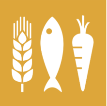
Universal access to safe and nutritious food
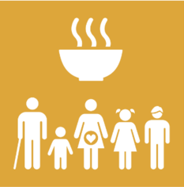
End all forms of malnutrition
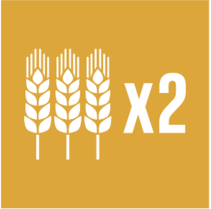
Double the productivity and incomes of small-scale food producers
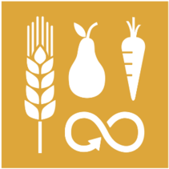
Sustainable food production and resilient agricultural practices
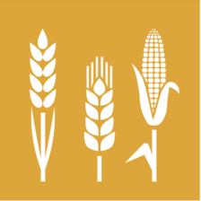
Maintain the genetic diversity in food production
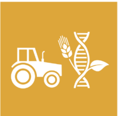
Invest in rural infrastructure, agricultural research, technology and gene banks
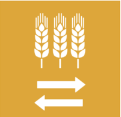
Prevent agricultural trade restrictions, market distortions and export subsidies
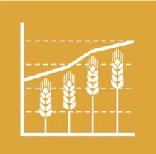
Ensure stable food commodity markets and timely access to information
Challenges
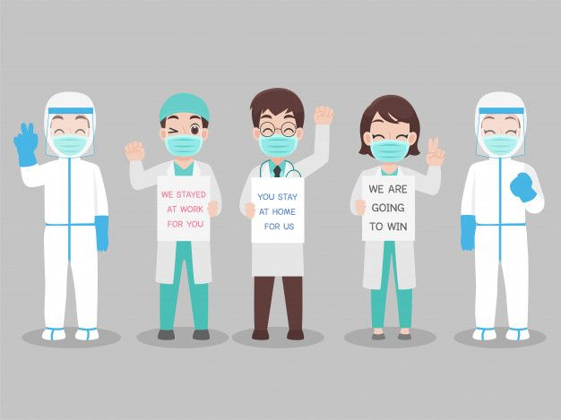
Impact of the COVID-19 pandemic
The COVID-19 pandemic and lockdown has placed a huge amount of pressure on agricultural production, disrupted global value and supply chain. Subsequently, this raises issues of malnutrition and inadequate food supply to households, with the poorest of them all gravely affected.
New Technologies
To address the increasing challenge of attaining the SDG 2 goal of Zero Hunger, new research has emerged on some of the new technologies that can be implemented to increase agricultural productivity and address the issues of climate change. The use of carbon smart technologies should be used to improve the chemical and physical qualities of soil.
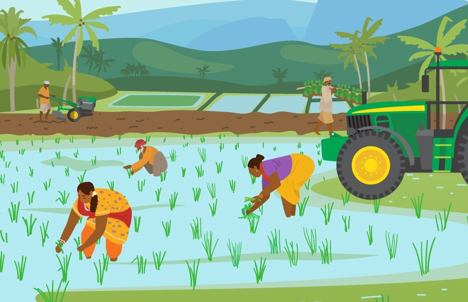
Shift to Annual-based Agriculture
Perennialization, or the use of perennial crops and forages in extended cycles, has been viewed as a critical strategy for maintaining present and future crop yields needed to feed the world's population. Perennialization can help with soil fertility restoration, soil carbon sequestration, nitrogen (N) availability, and phosphorus (P) retention, all of which are important parts of ecological nutrient management.
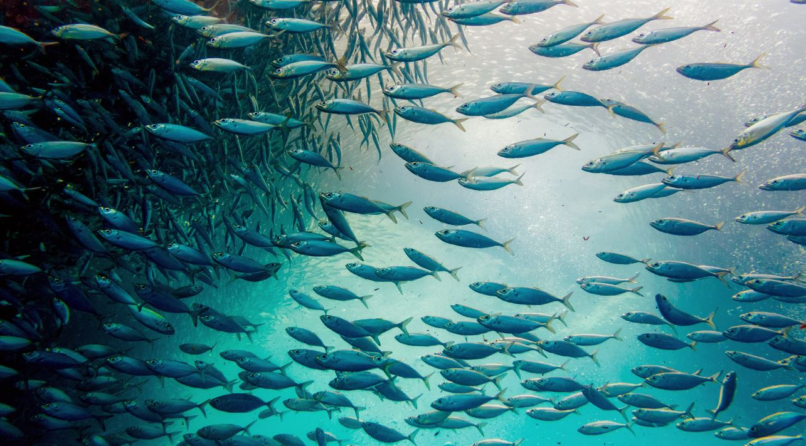
Importance of Fisheries
The significance of inland fisheries to global food security is currently underestimated due to insufficient evaluation and data availability. If we are to achieve the goal of zero hunger, we must recognize the importance inland fisheries have on global nutrition.
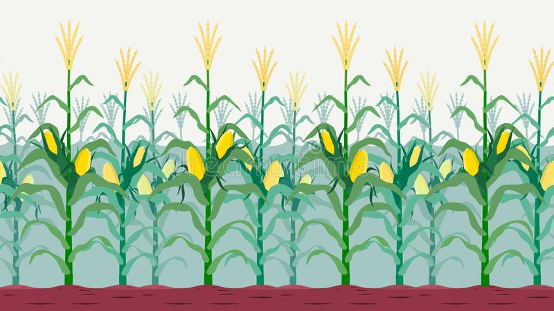
GM crops
The rapid growth of the world population requires the development of new technologies to feed people adequately. The genetic modification of food plants can help meet part of this challenge. Genetic modification of of plants to improve micronutrient nutrition is a complementary approach.
Conclusion
A world with zero hunger can positively impact our economies, health, education, equality and social development.
It's a key piece of building a better future for everyone. Sustainable Development Goal 2
seeks sustainable solutions to end hunger in all its forms by 2030 and to achieve
food security. The aim is to ensure that everyone everywhere has enough good-quality food
to lead a healthy life. Achieving this Goal will require better access to food and the
widespread promotion of sustainable agriculture.